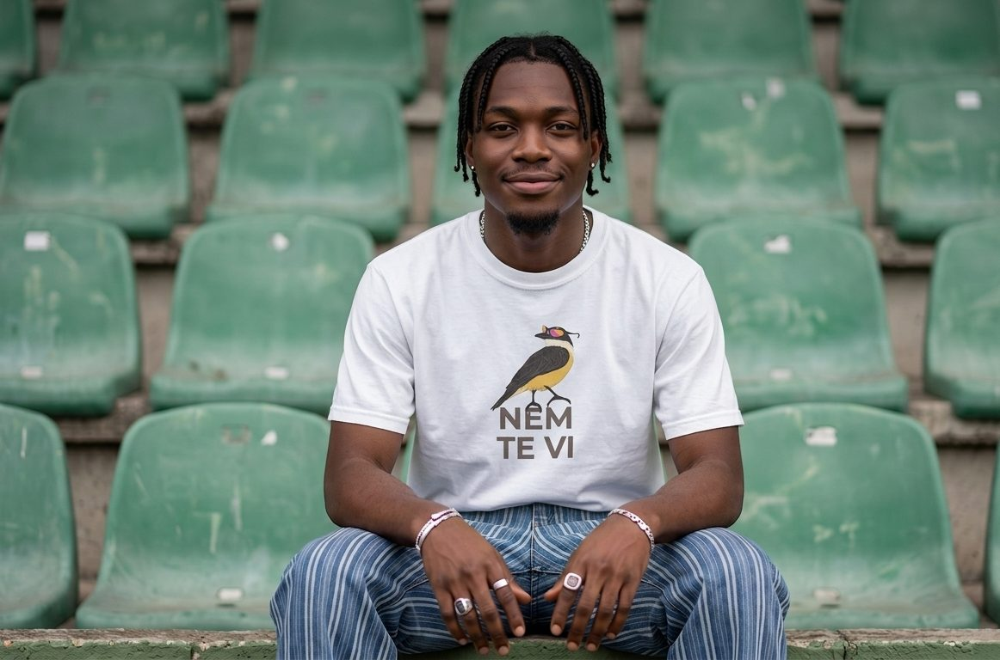
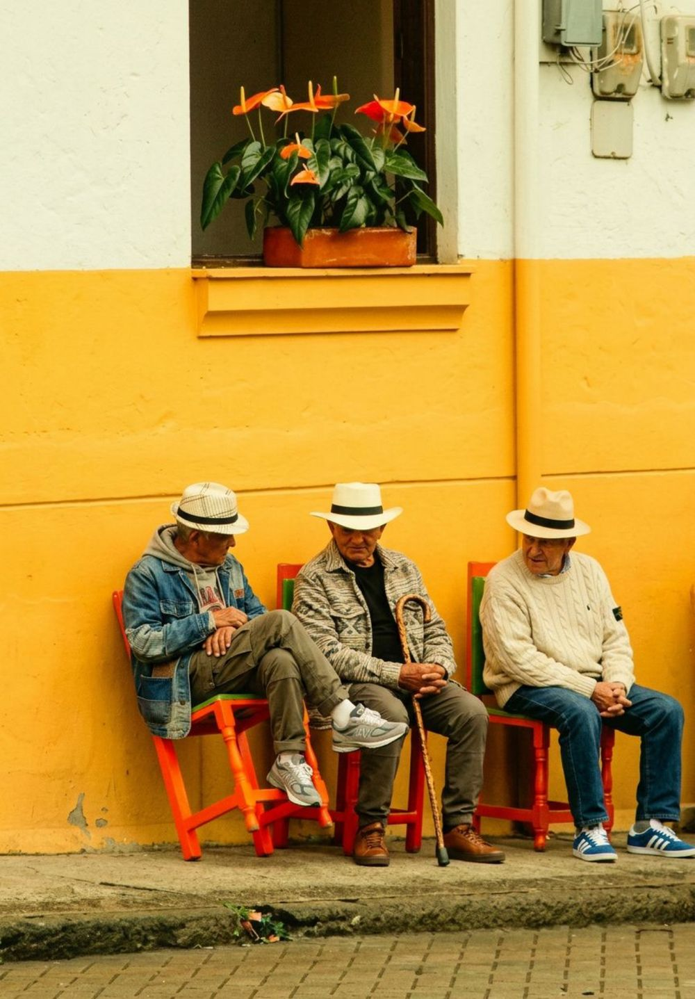

Cotidiano
Frases e gírias que a gente usa todo dia, pintadas como placa de boteco.
Camisetas autorais de cotidiano, bichos do Brasil e retratos.
Role para entrar na mata ↓Coleção 01 · lançamento em 20 de novembro.
Role para chegar mais perto ↓Camisetas autorais de cotidiano, bichos do Brasil e retratos.
A moda como manifesto de preservação de identidades e culturas.
Acreditamos que o vestuário é uma plataforma de reverência. Na Gira Moço, desenvolvemos coleções autorais inspiradas na riqueza profunda da cultura e dos povos brasileiros.
Nosso maior objetivo é mostrar que existe riqueza na simplicidade e na vida cotidiana, trazendo mensagens e sentimentos através das nossas estampas.
E, ao mesmo tempo, te deixar mais estiloso ou mais estilosa ;)
Frases da rua, bichos e plantas daqui e rostos em preto e branco. Estilos diferentes, a mesma cara de Gira Moço.
Frases e gírias que a gente usa todo dia, pintadas como placa de boteco.
Fauna, flora e símbolos do dia a dia, em traço de xilogravura e cordel, com o nome do bicho embaixo.
Fotografia documental em preto e branco, com granulação de filme e um dado verdadeiro sobre cada povo.
Fiado só amanhã · Cuidado com o cão · Tem geladinho
Quem não tem cão caça com gato · Água mole em pedra dura · Devagar se vai ao longe
Capivara · tatu-bola · onça-pintada · bem-te-vi · boto-cor-de-rosa
Rostos em preto e branco, com o nome do povo e um dado verdadeiro


Existe riqueza na simplicidade e na vida cotidiana.
As estampas nascem do que a gente vê na rua: a placa pintada à mão, o ditado da avó, o passarinho no fio, a conversa na calçada.
A coleção está no ar.
Quer ver as estampas antes de todo mundo? Comente EU QUERO nos posts do @use_giramoco e entre na lista VIP. Na noite de 19/11, a lista recebe o link da loja com acesso antecipado.